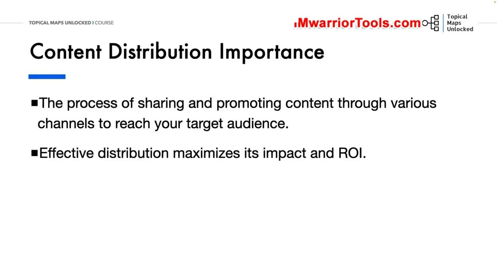
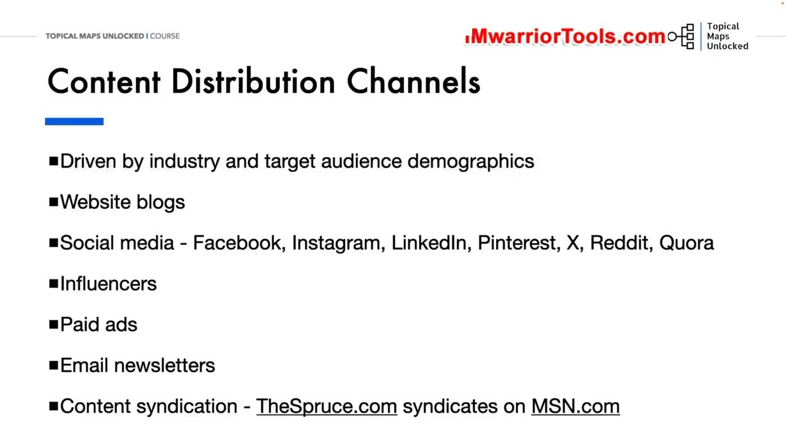
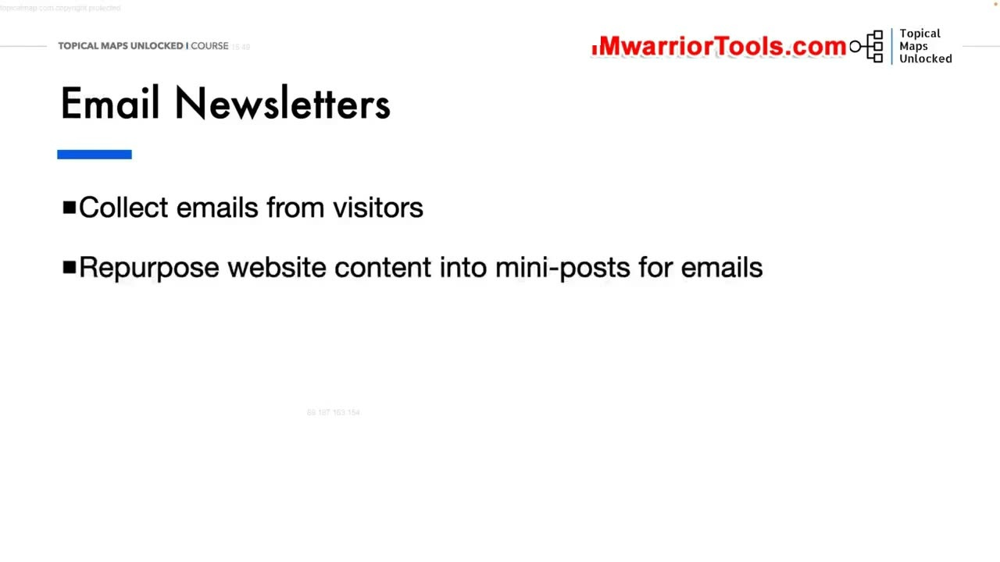
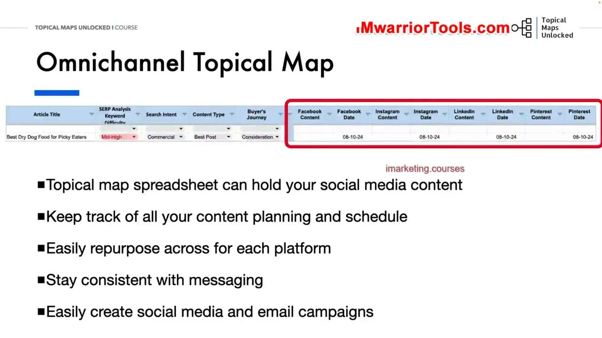

Content Distribution + Omnichannel Marketing
1. Bản chất và Tầm quan trọng của Phân phối nội dung (Content Distribution)
Trong bài học thứ hai của học phần, Yoyao chuyển hướng từ khâu đo lường sang khâu khuếch đại sức mạnh nội dung: Phân phối nội dung và Tiếp thị đa kênh (Content Distribution & Omnichannel Marketing).
Yoyao định nghĩa một cách khúc chiết: "Phân phối nội dung và tiếp thị đa kênh là quá trình chia sẻ, quảng bá và lan tỏa bài viết thông qua nhiều kênh tiếp cận khác nhau nhằm tiếp cận đúng tệp khán giả mục tiêu của bạn ở bất kỳ nơi nào họ đang hiện diện và hoạt động hàng ngày."
Một sai lầm kinh điển mà đa số người làm SEO thường mắc phải là: Xuất bản bài viết xong là ngồi yên thụ động chờ đợi Google mang khách truy cập tự nhiên đến!
Các đợt cập nhật thuật toán liên tục của Google gần đây đã dẫn đến sự biến động rất lớn và khó lường trong lượng tìm kiếm tự nhiên của nhiều website. Nhưng may mắn thay, khách hàng mục tiêu của bạn không chỉ sống trên Google! Họ đang hoạt động sôi nổi trên rất nhiều nền tảng trực tuyến khác như mạng xã hội, diễn đàn, hòm thư email và các cộng đồng chuyên môn. Do đó, tiếp thị đa kênh chính là chiếc phao cứu sinh vững chắc nhất để bảo vệ và phát triển doanh nghiệp:
- Tối đa hóa tác động và tỷ suất sinh lời (Maximize ROI): Tận dụng tối đa giá trị của những bài viết chất lượng cao mà bạn đã dày công nghiên cứu và biên tập, biến một bài viết blog duy nhất thành hàng chục tài sản số có khả năng thu hút khách hàng trên nhiều mặt trận khác nhau.
- Tạo lực đẩy ban đầu mạnh mẽ cho SEO: Thu hút lượng truy cập xã hội (Social Traffic) và các tín hiệu tương tác người dùng ban đầu, giúp bot Google nhanh chóng khám phá, lập chỉ mục bài viết và đánh giá cao độ phổ biến cũng như độ tin cậy của trang web.
- Đa dạng hóa nguồn lưu lượng truy cập: Giảm bớt sự phụ thuộc rủi ro vào một kênh duy nhất là tìm kiếm tự nhiên của Google, giúp nguồn thu nhập và lượng khách hàng tiềm năng của bạn luôn ổn định trước mọi cơn bão cập nhật thuật toán.
- Gia tăng tỷ lệ chuyển đổi khách hàng: Tiếp cận khách hàng qua nhiều điểm chạm lặp đi lặp lại giúp củng cố nhận thức thương hiệu và thúc đẩy quyết định mua hàng nhanh hơn.

2. Sáu kênh phân phối nội dung cốt lõi và Chiến lược Syndication của TheSpruce.com
Chiến lược phân phối nội dung phải được dẫn dắt bởi đặc thù ngành nghề và nhân khẩu học của tệp độc giả mục tiêu. Yoyao mổ xẻ 6 kênh phân phối trọng yếu:
- Website Blogs (Nền tảng gốc của doanh nghiệp): Nơi xuất bản và lưu trữ toàn bộ các bài viết chuyên sâu có cấu trúc Silo hoàn chỉnh, đóng vai trò là kho tri thức trung tâm nuôi dưỡng thẩm quyền tên miền.
- Mạng xã hội (Social Media): Facebook, Instagram, LinkedIn, Pinterest, X (Twitter), Reddit, Quora - mỗi nền tảng phục vụ một định dạng và nhóm độc giả riêng biệt. Ví dụ: Instagram và Pinterest thiên về hình ảnh trực quan; LinkedIn mang tính chuyên nghiệp học thuật; Facebook và Reddit mạnh về cộng đồng thảo luận và kết nối nhóm.
- Người có tầm ảnh hưởng (Social Media Influencers): Hợp tác với các chuyên gia hoặc người có tiếng nói uy tín trong ngách để họ chia sẻ hoặc giới thiệu bài viết của bạn. Ví dụ: Khi họ tìm kiếm thức ăn tự nhiên cho chó, bạn có thể gửi tặng mẫu thử sản phẩm hoặc trích dẫn bài viết phân tích chuyên sâu của bạn cho họ tham khảo và cùng thảo luận.
- Quảng cáo trả phí (Paid Ads): Sử dụng quảng cáo để tăng cường phạm vi tiếp cận khi lưu lượng tự nhiên bị ảnh hưởng. Tuy nhiên, Yoyao lưu ý nguyên tắc vàng: Chỉ chạy quảng cáo khi chi phí thu hút khách hàng (CPA) thấp hơn doanh thu trọn đời mang lại trên mỗi người dùng (LTV), và nội dung bài viết bắt buộc phải giữ chân được độc giả để tạo ra chuyển đổi thực tế.
- Bản tin Email (Email Newsletters): Kênh giao tiếp trực tiếp độc quyền với danh sách người đăng ký của riêng bạn, mang lại tỷ lệ tương tác và chuyển đổi cao nhất mà không bị thuật toán của bất kỳ bên thứ ba nào can thiệp hay bóp nghẹt tương tác.
- Chia sẻ bản quyền nội dung (Content Syndication): Cho phép các cổng thông tin và trang báo chí lớn tái xuất bản bài viết của bạn. Yoyao nêu dẫn chứng thực tế điển hình: Trang web khổng lồ TheSpruce.com thường xuyên phân phối lại các bài viết của họ lên cổng thông tin MSN.com (đường dẫn phân phối thespruce.com/msn). Mỗi bài viết xuất bản trên TheSpruce đồng thời xuất hiện trên MSN và đặt liên kết trỏ ngược lại trang gốc, tiếp cận hàng triệu độc giả mới mỗi ngày mà không tốn thêm chi phí sản xuất.
Sự kết hợp đồng bộ giữa các kênh này sẽ tạo nên một mạng lưới phân phối đa tầng, đảm bảo bài viết của bạn luôn hiện diện trước mắt khách hàng mục tiêu.

3. Bản tin Email nuôi dưỡng độc giả và Chiến lược Tái sử dụng nội dung (Content Repurposing)
Làm thế nào để phân phối nội dung liên tục mà không bị quá tải nguồn lực? Yoyao hướng dẫn quy trình vận hành bản tin email và tái sử dụng nội dung thông minh:
- Quy trình xây dựng Bản tin Email chuyên nghiệp:
- Chủ động thu thập địa chỉ email từ khách truy cập thông qua các nam châm thu hút khách hàng tiềm năng (Lead Magnets) được tạo ra từ việc đóng gói các bài viết chất lượng cao trên web thành tài liệu PDF hướng dẫn hữu ích.
- Tái sử dụng nội dung bài viết blog: Trích xuất các đoạn nội dung giá trị nhất thành các mẩu tin ngắn, đính kèm liên kết kêu gọi độc giả nhấp vào để đọc bài viết đầy đủ trên website của bạn.
- Tạo dòng tiêu đề email (Subject line) hấp dẫn, kích thích trí tò mò để gia tăng tối đa tỷ lệ mở thư (Open rate).
- Phân đoạn danh sách email (List Segmentation) theo sở thích và hành vi của người đọc để phân phối nội dung đúng mục tiêu nhất.
- Cá nhân hóa lời chào trong email (thu thập ít nhất tên đầu tiên để gọi tên độc giả thân mật trong lời chào: "Chào Dung, chào Dân...") nhằm tạo sự gần gũi, ấm áp và gắn kết.
- Khuyến khích những người đăng ký hiện tại giới thiệu bản tin cho bạn bè và đồng nghiệp để mở rộng danh sách người theo dõi hoàn toàn tự nhiên.
- Tái sử dụng nội dung trên các nền tảng mạng xã hội:
- Dựa vào chân dung khách hàng mục tiêu để lựa chọn nền tảng phù hợp, tuyệt đối không dàn trải vô ích vào các kênh mà khách hàng không xuất hiện.
- Điều chỉnh định dạng bài viết cho từng kênh: Trích xuất các trích dẫn đắt giá, số liệu thống kê hoặc chuyển đổi các bước hướng dẫn thành hình ảnh minh họa hoặc slide bắt mắt.
- Xây dựng các trang thương hiệu (Branded Pages) và tạo lập các hội nhóm cộng đồng trong ngành để trở thành người dẫn đầu tư tưởng (Thought Leader).
- Chủ động tham gia thảo luận sâu sắc trong các hội nhóm và cộng đồng liên quan để thu hút sự chú ý của độc giả về trang web chính.

4. Tích hợp Kế hoạch Đa kênh trực tiếp vào Bảng tính Topical Map và Ứng dụng AI
Một chiến dịch tiếp thị đa kênh xuất sắc đòi hỏi thông điệp truyền thông phải có tính nhất quán tuyệt đối (Consistent Messaging) qua mọi điểm tiếp xúc: Từ trang web, ứng dụng di động, mạng xã hội cho đến hòm thư email. Để quản lý khối lượng công việc khổng lồ này, Yoyao giới thiệu giải pháp độc bản: Omnichannel Topical Map (Bản đồ chủ đề đa kênh tích hợp):
Thay vì sử dụng các file rời rạc gây hỗn loạn và mất kiểm soát, Yoyao mở rộng trực tiếp bảng tính Topical Map hiện có bằng cách bổ sung thêm các cột quản lý mạng xã hội và email:
- Cột ngày đăng dự kiến cho từng nền tảng: Facebook Date, Instagram Date, LinkedIn Date, Pinterest Date, Email Date...
- Cột nội dung bài đăng ngắn đã được điều chỉnh phù hợp với phong cách và định dạng của từng kênh truyền thông.
- Lưu trữ đường link trực tiếp đến các bài đăng đã xuất bản và thư mục lưu trữ hình ảnh/video để tiện đối chiếu và so sánh mà không mất công tìm kiếm lại qua từng tài khoản.
- Quy tắc không nhảy Silo (No-Silo-Jumping): Đảm bảo toàn bộ các bài đăng mạng xã hội và email trong tuần đều xoay quanh đúng một nhánh Silo duy nhất đang được triển khai trên website (ví dụ: tuần này toàn bộ các kênh đều đồng loạt nói về Thức ăn khô cho chó). Điều này giúp công chúng và thuật toán nhận diện bạn là chuyên gia số một trong lĩnh vực đó.
Ứng dụng AI siêu tốc và Tinh chỉnh mô hình riêng (Fine-tuning AI):
Yoyao hướng dẫn sử dụng AI (ChatGPT Plus hoặc Claude Projects) để tạo bài đăng mạng xã hội tự động: Bạn nạp bản thảo bài viết blog kèm theo thông tin bản sắc thương hiệu và chân dung khách hàng đã cài sẵn trong Custom GPTs / Projects. AI sẽ xuất ra các bản nháp bài đăng mạng xã hội chuẩn chỉnh từng kênh trong vài giây.
Đặc biệt, trong tương lai, khi bạn đã tích lũy được từ 30 đến 40 bài đăng mẫu xuất sắc nhất, bạn có thể sử dụng tập dữ liệu này để Tinh chỉnh (Fine-tune) mô hình AI riêng thông qua API (như OpenAI API). Khi đó, các bản nháp đầu tiên do AI tạo ra sẽ mang trọn vẹn 100% phong cách và giọng điệu độc bản của thương hiệu bạn mà hầu như không cần phải chỉnh sửa thủ công!
Hệ thống này giúp bạn giải phóng tối đa thời gian quản lý, có thể bàn giao quy trình lên lịch cho trợ lý ảo (VA) thực hiện theo đợt một cách trơn tru và dễ dàng mở rộng quy mô kinh doanh không giới hạn.

Nguồn và đối chiếu
- Topical Maps Unlocked 2.0 · 02-Content Distribution + Omnichannel Marketing (Video bài học chính).
- Đối chiếu ngữ nghĩa với bản tiếng Anh: Bản Tiếng Anh/09-Content Publishing Module/02-Content Distribution + Omnichannel Marketing.mp4.